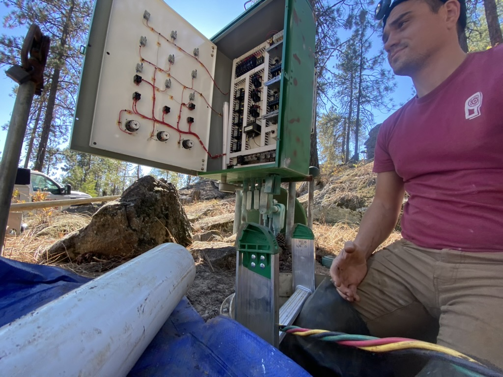

Field Service & Troubleshooting
Where installed systems prove themselves — or show their weak points.
The work documented here spans public water systems, UL-508 industrial control panels, field electrical work under 03A scope, and mixed-use infrastructure, often performed years after original installation. In many cases, systems did not match drawings, assumptions, or documentation, reflecting incremental field modifications, deferred maintenance, or operator-driven changes over time.
Much of this work occurred on active, regulated systems supporting occupied facilities, public water delivery, or critical operations. Shutdown windows were limited, regulatory oversight was present, and changes had to respect both electrical licensing limits and operator authority.
My role in these environments was diagnostic first. Before replacing components or altering configuration, I focused on understanding how the system was actually behaving under load: how control logic, field wiring, mechanical equipment, and operator practices interacted in real conditions. This included evaluating panel construction and modifications under UL-508 shop practices, tracing field wiring and power distribution within 03A scope, and coordinating findings with water system operators responsible for regulatory compliance.
Failures were rarely isolated to a single discipline. Electrical faults, control logic drift, mechanical wear, and operational workarounds often compounded each other. Effective correction required recognizing where responsibility boundaries lay, identifying which actions were permissible within scope, and ensuring changes improved reliability without introducing regulatory or safety risk.
Working Conditions
Most service work occurred under constraint:
These conditions materially shape how systems must be diagnosed, modified, and returned to service. Every decision had to account for safety, compliance, and downstream operational impact.
- Limited shutdown windows
- Active systems supplying water, power, or both
- Incomplete or outdated documentation
- Environmental exposure and tight access
- Regulatory and operator-of-record oversight
Under those conditions, speed without understanding creates repeat failures. The objective was to stabilize operation, isolate faults, and implement corrections that reduced uncertainty rather than masking symptoms.

Representative Field Work
Diagnostics, open panels, pumps, and live systems under load.
The work shown includes:
- Live electrical and control diagnostics
- Control panel replacement and in-place modification
- VFD and pump-control verification after service
- Probe, sensor, and telemetry fault isolation
- Solo pump pulls and sets on residential and small-system wells
- Wiring cleanup and rerouting to restore diagnosability
Solo pump work required controlling the string, maintaining alignment, protecting conductors, and verifying operation before handoff. Clean sequencing and methodical handling were the difference between a stable return to service and avoidable damage.
Diagnostic Approach
Service work began with verification.
Electrical diagnostics were performed live where required, tracing faults through control logic, sensors, power delivery, and field wiring rather than assuming component failure. Mechanical issues were evaluated in terms of how they affected electrical behavior, flow response, pressure stability, or system cycling.
Temporary stabilization was used when necessary to keep systems operational while faults were isolated. Permanent corrections were sequenced only after failure modes were understood and downstream impacts considered.
This approach applied equally to water systems, controls, and building infrastructure. A recurring pattern was compounded failure: small issues hidden by workarounds, deferred maintenance, or prior repairs that addressed symptoms instead of mechanisms.
Probe and telemetry issues are included here intentionally. Level and signal faults often present as nuisance alarms, pump cycling problems, or apparent equipment failure. Cleaning up signal paths and verifying sensor behavior frequently resolved issues without replacing major components.
Utility and Municipal Service
This page also includes municipal and utility-scale service work, including pump house upgrades, reservoir diagnostics, lift and pump station work, and control system verification under service constraints.
Service decisions affected not only the equipment but also operator response, alarm behavior, and regulatory compliance. Routing, labeling, access, and documentation were treated as part of the repair, not afterthoughts.
Confined Space and Verification
Several projects required confined-space coordination, including reservoir pump verification and vault work. These tasks were performed under defined safety protocols and verified before systems were returned to normal operation.
Verification mattered. Systems were observed under load after service to confirm stable behavior, pressure response, and correct control logic before handoff. Assumptions were not accepted as verification.
Closing
Good field service is quiet. It restores function, reduces uncertainty, and leaves systems easier to understand than they were before the failure. The work shown here reflects a conservative, methodical approach intended to prevent repeat failures and support operators who will maintain these systems long after the service call ends.